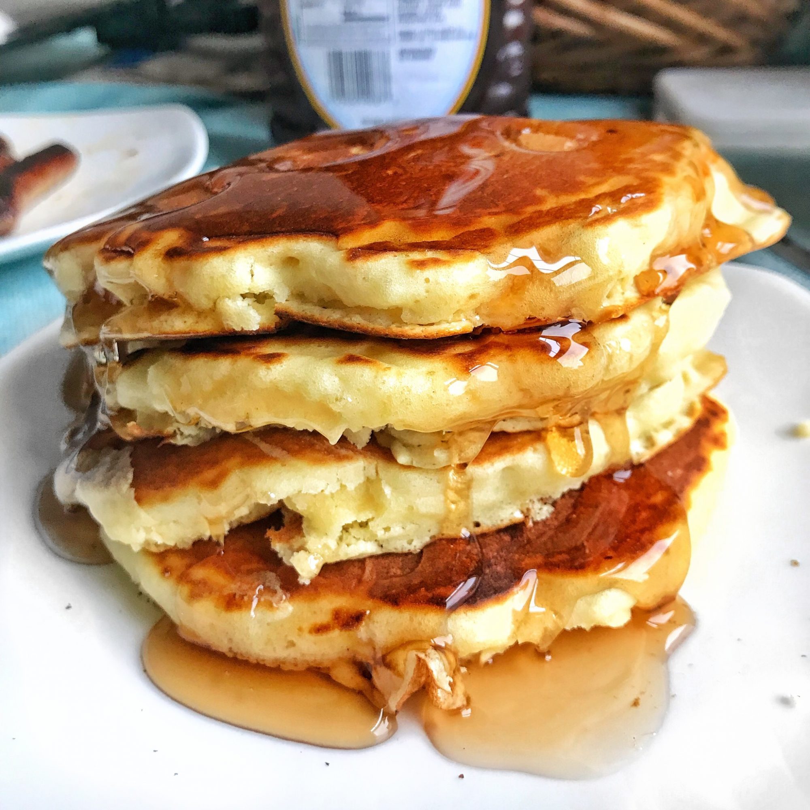

Pancakes

A classic part of an American breakfast!
This recipe will surely find its way into your regular weekend breakfasts.
Ingredients
- 1 1/2 cups all-purpose flour
Heat a lightly oiled griddle or frying pan over medium-high heat. Pour or scoop the batter onto the griddle, using approximately 1/4 cup for each pancake. Brown on both sides and serve hot.p salt
- 1 tbsp white sugar
- 1 1/4 cups milk
- 1 large egg
- 3 tbsp butter, melted
Steps
- In a large bowl, sift together the flour, baking powder, salt and sugar. Make a well in the center and pour in the milk, egg and melted butter; mix until smooth.
- Heat a lightly oiled griddle or frying pan over medium-high heat. Pour or scoop the batter onto the griddle, using approximately 1/4 cup for each pancake. Brown on both sides and serve hot.